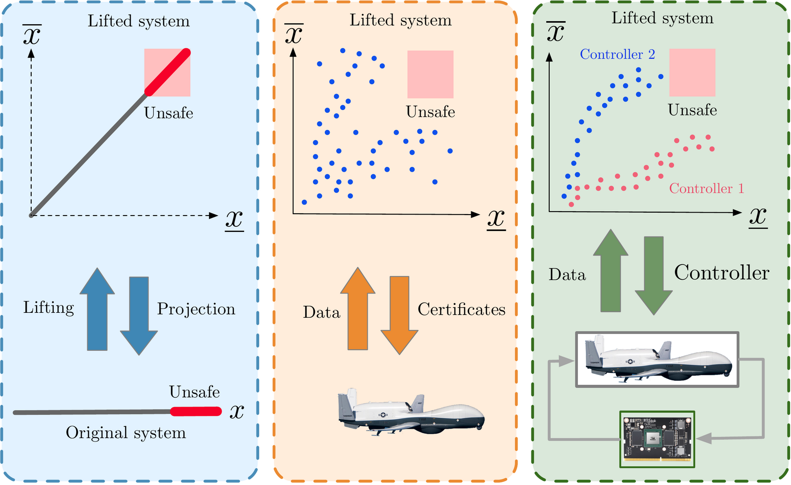

My research is in the broad area of control theory and autonomy with
focue on developing provable guarantees for safety, learning, and
control of robotics and cyber-physcial systems. Recent
technological advances are changing the way autonomous systems
are being operated and are opening up new possibilities for their
control and coordination. Despite the benefits of these emerging
technologies, safety and reliability consideration pose
substantial challenges in fully utilizing them in real-world
applications. I leverage tools and concepts from
systems and control theory for performance analysis of
optimization and machine learning algorithms and for safety
assurance of modern autonomous systems.

Scalable Safety Certification from Data via Monotone Lifting
The growing deployment of autonomous systems in safety-critical environments has made rigorous safety guarantees a critical priority. Establishing such guarantees is particularly challenging when explicit models of the system dynamics are difficult or impossible to obtain and safety verification must instead rely on historical trajectories or simulator data. Existing data-driven safety-verification methods suffer from computational and sample complexity that grows rapidly with the system dimension. My research demonstrates that a fundamental structural property of dynamical systems—monotonicity—can substantially alleviate these challenges. I treat monotonicity not as a restrictive requirement on the original dynamics, but as a canonical structural representation, and develop the mathematical foundations for lifting general nonlinear systems into higher-dimensional monotone systems while preserving their relevant behaviors and safety properties. The order-preserving structure of these monotone liftings reduces global certificate conditions to checks at carefully selected boundary points, thereby alleviating the curse of dimensionality and substantially reducing the amount of data required for rigorous safety assurance.
Selected Publications:
A. Alavi, M. Zamani, and S. Jafarpour,
Scalable Neural Safety Certification via Monotonicity,
2026, Submitted.
Machine learning components are increasingly being
deployed in safety-critical autonomous systems, driven by the
availability of abundant data and their computational
efficiency. However, these learning-based components often lack formal
performance guarantees. Moreover, due to their high-dimensional and
nonlinear nature, traditional verification methods struggle to scale
effectively for ensuring their safety. My research focuses on the
safety of such autonomous systems from a reachability perspective. By
leveraging state-of-the-art verification techniques for learning
algorithms, we develop computationally efficient tools to estimate the
reachable sets of learning-enabled systems.
Many real-world systems operate under uncertainties that are
unbounded, unpredictable, and highly variable over time. For such
uncertainties, providing tight bounds is impractical, making it more
appropriate to model them as stochastic variables and apply
probabilistic methods for analysis. However, for general nonlinear
systems, the existing results in the literature fail to accurately
capture the impact of stochastic noise on system dynamics. We
develop a comprehensive theoretical and algorithmic framework that
separates the effect of between worst-case and stochastic uncertainties, offering statistically tight estimates of the reachable sets of stochastic systems. A key advantage of our framework is its adaptability to any verification and synthesis algorithm for deterministic systems.
Many autonomous systems seamlessly
integrate dynamical models with optimization and learning
algorithms. These systems can exhibit a wide range of asymptotic and
transient behaviors, from convergence to reference trajectories to
periodic orbits. To ensure their reliable performance, it is crucial
to provide provable guarantees for their behavior. Contraction
theory, a classical framework for studying dynamical systems, that
provide guarantees for systems based upon the incrementally distance
between trajectories. However, the analysis and design of
optimization and learning algorithms extend beyond the scope of
classical contraction theory. We develop extensions of classical
contraction theory to investigate the stability and robustness
properties of autonomous systems that incorporate optimization and
learning algorithms.
Large-scale autonomous systems, such as
multi-agent robotic systems and infrastructure networks, are
becoming ubiquitous in modern society. With the increasing
integration of intelligent sensing and actuation devices, these
systems are becoming more vulnerable to disturbances. Ensuring
robustness of these complex systems against disruptions and
adversarial events is a critical task for system operators. Ensuring
the robustness of these complex systems against disruptions and
adversarial events is a critical task for operators. A key challenge
in guaranteeing their robustness is the sheer size of these
networks. We analyze these large-scale autonomous
systems from a network perspective and develop
computationally efficient methods to certify their safety and
stability.